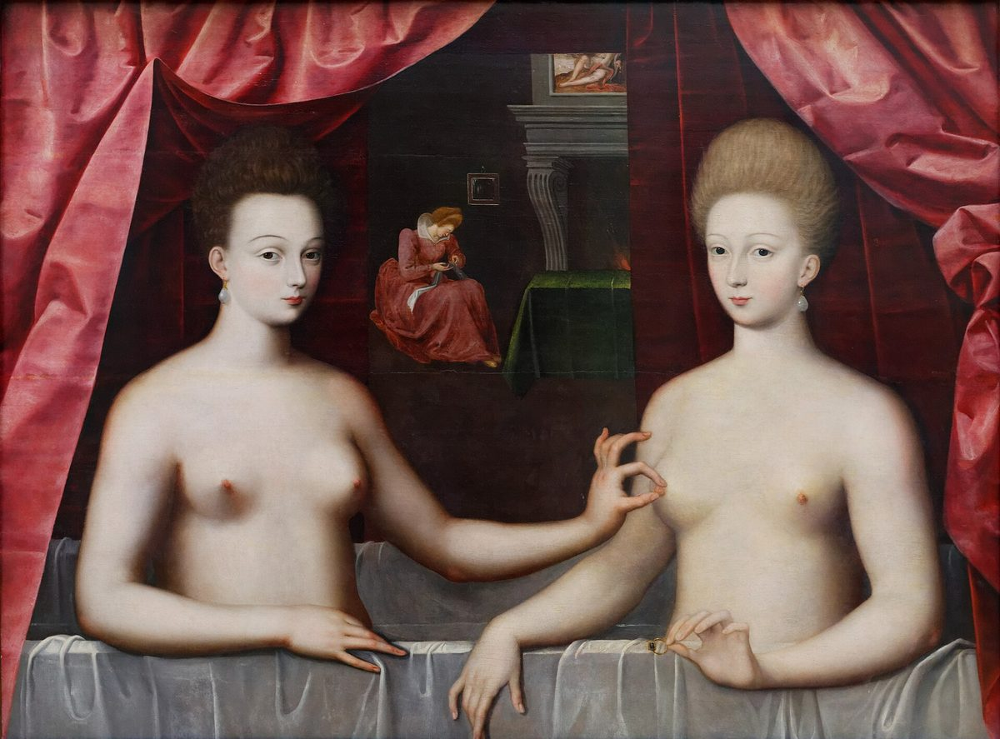

Hidden in the Frame · Louvre Museum, Paris
Gabrielle d'Estrées and One of Her Sisters
School of Fontainebleau, unknown painter · c. 1594 · Oil on oak panel, 96 × 125 cm · Room 824 (Richelieu wing, level 2)

The story
On the right sits Gabrielle d'Estrées, the mistress of the French king Henri IV, on the left probably her sister. Two naked women in a bathtub – it looks strange today, but it was a coded picture. In 1594 Gabrielle gave birth to a son of the king, and Henri even wanted to marry her. Shortly before the planned wedding she died, in 1599.
Details to look for
- The sister pinches Gabrielle's nipple. The usual reading: a hint at pregnancy and fertility – in other words, at the king's child.
- Gabrielle holds a ring between her fingers. It is read as the king's ring, a promise of marriage. She shows it off without putting it on.
- At the back of the room a woman is sewing. Many see this as preparation for the baby, such as clothes for the newborn.
- Gabrielle's face stays completely calm, almost blank. That poker face is what makes the picture so puzzling – as with the Mona Lisa, you wonder what she is thinking.
What it says
A court gossip column in oil: anyone who knew the signs could read pregnancy, love and a claim to the throne.
Open the full guide – zoom, audio guide, German & Japanese →